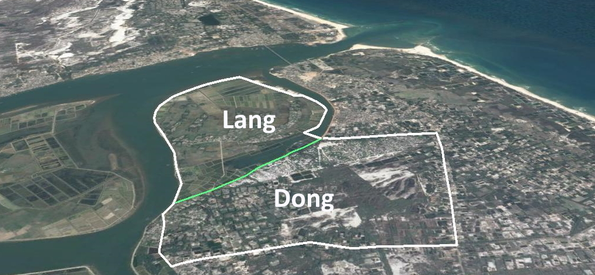

The Tuong Van community is one of the five villages that are administrated by the Trieu An commune under the Trieu Phong district the Trieu Phong district. The village has nearly 1,500 habitants living in 350 households across two residential areas, Lang and Dong, which have socially close relationships and share several social and economic activities. For instance, they not only share the same governmental administrative system and formal social networks such as unions of farmers and women, but many families in one residential area have relatives in the other. The number of households in these two residential areas is similar.
The governmental administrative system is the most important formal network of the village, and formally connects the residents with higher levels of government as well as non-governmental organizations (NGO). This system was established by higher levels of government when Quang Tri obtained the liberation in 1973. The system includes a village leadership board, which executes social-economic development for the village. Tuong Van has four local associations: Unions of Youth and Women, Agriculture Association, and Fartherland to assist the administrative system.
Lang and Dong have similar social and economic characteristics, but the former has a higher level of exposure to hazardous zones including the Thach Han River and the Cua Viet Sea. Lang is located closer to the Thach Han River, which annually brings floods to its residents. In addition, Lang is on low land and near the river mouth opening to the Cua Viet Sea, which commonly receives strong winds and storm surges. In contrast, Dong residents not only live on higher land, but are also shielded from the more hazardous zones by An Loi village and Lang.
Tuong Van is connected formally and informally with its neighbouring villages. For instance, the community is not only joined with the other four villages of the Trieu An community in the governmental program of storm and flood disaster risk reduction, but many families in the community have relatives in Ha Tay and Thanh Xuan villages. In addition, Tuong Van relates to villages of other neighbouring communes. For example, Lang residents are involved in some livelihoods on the Bac Phuoc alluvial islet of Trieu Phuoc commune, despite being separated by the Thach Han River.